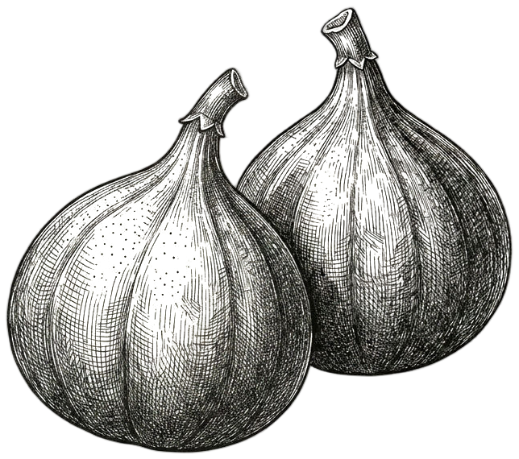

During my years at Stanford, I often thought of Sylvia Plath’s The Bell Jar. Most of the time, I saw my life branching out before me like that fig tree in the story, each fig a beautiful future, beckoning and winking. One is a humanitarian, changing the world one person at a time. Another one was a businessman, with a loving family. Another, a storm chaser with his horse in rural America, working the land and living authentically, and another, a man stuck in a town which slowly drains him of life until he concedes to whatever is demanded of him, coddled by a suffocating comfort.
But as I sat at the crotch of that fig tree, starving, each of these figs fell to the ground, rotting at my feet. The words of Marguerite Duras often echoed through my being: “that very early in my life it was too late.”
Studying abroad at the University of Oxford, and then another semester in Washington, changed all of that. I realized that Politics, Philosophy, and Art were my interests. But Design. Design was what I wanted to do for the rest of my life. A search for meaning and inspiration in everything. To create, and not just consume. To put beauty and love back into the world that has given me so much.